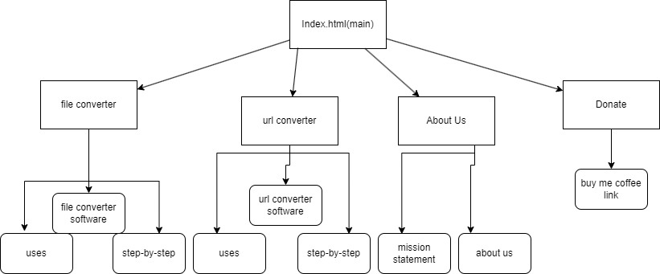

The application is a purpose tool that makes file management and manipulation much easier. It will allow users to paste a link into a search bar and it will create a download link for the user. As well, this website will be able to change the file type of a given file. For example, from .mp4 to .mov.
The intended user of this website is someone who creates and edits files. Usually, this user would need files from the internet and would require this file but there would be no access to it.
The page will be very simple. The page will first show a main section that is either the download feature or the file changer. Under this section, there will be more applications for use and a "buy me coffee" link.
Client Information
Name of the client.
Organization/Institute/Business the client/s are associated with.
Client’s valid email address.
Client’s phone number (if they are willing to share).
Anikesh Waghchoure
Waghchoure Corp
[private]
[private]
Wireframe
Wireframe for Default Page Design
Site Map
Wireframe for Default Page Design

Page Design
The name of the page
Purpose of the page
Audience/Users of page (customer, admin, etc.)
What will be content of the page?
Is this a page where you are asking users to enter data on the page?
Will those data fields need any validations (if any)?
Will the page contain buttons or hyperlinks or drop downs?
What actions will happen in the page? (such as, when user clicks on a button - data processed, navigate to other page, search based on value, etc.?)
Any special notes regarding the page (if any)?
Main/Home Page
Main/Home Page
Demonstrate the ability of the file multitool.
Everyone would use this page.
It will be a selector of what tool you want to use. Under that, the uses of the multitools and how to use them.
No data is entered into this page.
N/A
Yes, there will be a 2 button that lead to their respective page.
It navigates to the respective page.
N/A
File Converter Page
File Converter Page
The purpose of this page is to allow users to convert files.
Everyone would use this page.
This page will contain options for users to upload their files, select the desired output format, and initiate the conversion process.
Yes, users will need to upload files for conversion.
Data fields will need validation to ensure that the uploaded files are in the correct format and within the size limits.
The page will contain buttons for uploading files, selecting output format, and initiating the conversion process. It may also have hyperlinks for additional resources or help.
When the user clicks on the "Convert" button, the selected file will be processed, converted to the desired format, and made available for download. If there are validation errors, appropriate messages will be displayed.
N/A
URL Converter Page
URL Converter Page
The purpose of this page is to allow users to convert URLs of videos to files.
Everyone would use this page.
This page will have a text input field for users to enter the URL they want to convert.
Yes, users will need to enter data by inputting a URL.
Validation may be required to ensure that the entered URL is in a valid format.
The page will contain buttons for submitting the URL for conversion.
When the user clicks on the "Convert" button, the URL will be processed, and the converted content will be made available for download.
N/A
About Page
About Page
The purpose of this page is to provide information about the project, its creators, and its mission.
Everyone would use this page.
The content of this page will include project background, team member profiles, and the project's goals and values.
No, users will not be asked to enter data on this page.
N/A
This page may contain hyperlinks for additional resources, social media links, and buttons for navigation.
N/A
N/A
Donate
Donate Page
The purpose of this page is to provide information about how users can support the project through donations.
Everyone would use this page.
The content of this page will include details about donation methods, benefits of donating, and possibly a donation form.
No, users will not be asked to enter data on this page.
N/A
This page will contain buttons or links for different donation methods, such as PayPal, buy me coffee, etc.
Clicking on a donation method will redirect the user to the respective payment gateway for processing the donation.
.png)